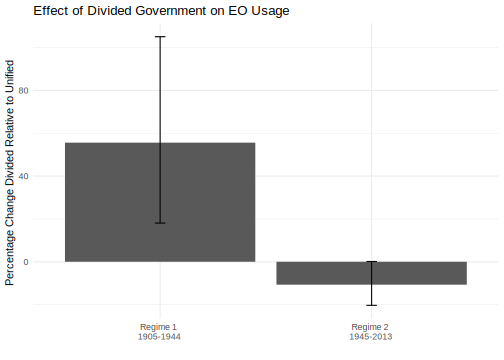

10.6 Count data practice problems
Let’s reproduce column 2 from Table 1 in the article and related estimates.
- Fit the following negative binomial model for year \(>\) 1944.
- Note: the numbers won’t exactly match the authors but should be close
\[ \begin{aligned} \log ({ E( \operatorname{allnoncerm_eo} ) }) &= \alpha + \beta_{1}(\operatorname{divided})\ + \\ &\quad \beta_{2}(\operatorname{inflation}) + \beta_{3}(\operatorname{spending\_percent\_gdp})\ + \\ &\quad \beta_{4}(\operatorname{war}) + \beta_{5}(\operatorname{lame\_duck})\ + \\ &\quad \beta_{6}(\operatorname{administration\_change}) + \beta_{7}(\operatorname{trend})\ + \\ &\quad \beta_{8}(\operatorname{truman}) + \beta_{9}(\operatorname{ike})\ + \\ &\quad \beta_{10}(\operatorname{jfk}) + \beta_{11}(\operatorname{lbj})\ + \\ &\quad \beta_{12}(\operatorname{nixon}) + \beta_{13}(\operatorname{ford})\ + \\ &\quad \beta_{14}(\operatorname{carter}) + \beta_{15}(\operatorname{reagan})\ + \\ &\quad \beta_{16}(\operatorname{bush41}) + \beta_{17}(\operatorname{clinton})\ + \\ &\quad \beta_{18}(\operatorname{bush43}) \end{aligned} \]
- Conduct a linear model using OLS and a Quasipoisson for comparison
- For each, calculate the average number of executive orders expected for divided government. How do these compare across models?
Try on your own, then expand for the solution.
fit.lm <- lm(allnoncerm_eo ~ divided + inflation + spending_percent_gdp +
war + lame_duck + administration_change + trend +
truman + ike + jfk + lbj +
nixon + ford +
carter + reagan + bush41 + clinton + bush43,
data = subset(bolton, year > 1944))
fit.nb <- glm.nb(allnoncerm_eo ~ divided + inflation + spending_percent_gdp +
war + lame_duck + administration_change + trend +
truman + ike + jfk + lbj +
nixon + ford +
carter + reagan + bush41 + clinton + bush43,
link="log",
data = subset(bolton, year > 1944))
fit.qp <- glm(allnoncerm_eo ~ divided + inflation + spending_percent_gdp +
war + lame_duck + administration_change + trend +
truman + ike + jfk + lbj +
nixon + ford +
carter + reagan + bush41 + clinton + bush43,
family="quasipoisson",
data = subset(bolton, year > 1944))
## Manual
X <- model.matrix(fit.lm)
X[, "divided"] <- 1
B <- coef(fit.lm)
exp.eo.lm <- mean(X %*% B)
X <- model.matrix(fit.nb)
X[, "divided"] <- 1
B <- coef(fit.nb)
exp.eo.nb <- mean(exp(X %*% B))
X <- model.matrix(fit.qp)
X[, "divided"] <- 1
B <- coef(fit.qp)
exp.eo.qp <- mean(exp(X %*% B))
exp.eo.lm[1] 56.86582exp.eo.nb[1] 55.52576exp.eo.qp[1] 55.41505## Prediction
exp.eo.lm <- prediction(fit.lm, at = list(divided=1))
exp.eo.nb <- prediction(fit.nb, at = list(divided=1), type="response")
exp.eo.qp <- prediction(fit.qp, at = list(divided=1), type = "response")
summary(exp.eo.lm) at(divided) Prediction SE z p lower upper
1 56.87 1.939 29.33 4.77e-189 53.07 60.67summary(exp.eo.nb) at(divided) Prediction SE z p lower upper
1 55.53 1.799 30.86 4.027e-209 52 59.05summary(exp.eo.qp) at(divided) Prediction SE z p lower upper
1 55.42 2.117 26.18 4.395e-151 51.27 59.56- We are going to build further on this example to try to reproduce Figure 2 in the authors’ paper. This is a plot that shows the percentage change in executive orders from divided to unified government with 95% confidence intervals.
These estimates are generated using the negative binomial regression models presented in Table 1. The good news is if we have followed the course notes and practice problems to this point, we have already fit both of these models.
To find the percent change, we calculate the incidence rate ratios, which represent: For a one-unit change in \(x\), the expected count changes by a factor of \(exp(\hat \beta_j)\).
- This can be converted to percent change by \((IRR - 1) \times 100\). For example, if the incidence rate ratio was 1.4, then for a one-unit change in \(x\), we would see a \(40\%\) change (increase) in the expected count.
- To find the confidence intervals, we can use
confint(fit), exponentiate these, and then follow the same formula for the lower bound and upper bound. Our confidence intervals will be bigger than the authors because we used a different type of standard error.
Try on your own, then expand for the solution.
fitn <- glm.nb(allnoncerm_eo ~ divided + inflation +
spending_percent_gdp + war + lame_duck +
administration_change + trend +
+ tr+ taft + wilson + harding
+ coolidge + hoover,
link="log",
data = subset(bolton, year < 1945))
fit.nb <- glm.nb(allnoncerm_eo ~ divided + inflation + spending_percent_gdp +
war + lame_duck + administration_change + trend +
truman + ike + jfk + lbj +
nixon + ford +
carter + reagan + bush41 + clinton + bush43,
link="log",
data = subset(bolton, year > 1944))
## Incidence Rate Ratios amd
irr1 <- exp(coef(fitn)["divided"])
irr2 <- exp(coef(fit.nb)["divided"])
ci.irr1 <- exp(confint(fitn)["divided",])Waiting for profiling to be done...ci.irr2 <- exp(confint(fit.nb)["divided",])Waiting for profiling to be done...## Percent change
pc1 <- (irr1-1)* 100
ci.pc1 <- (ci.irr1 - 1)*100
pc2 <- (irr2-1)* 100
ci.pc2 <- (ci.irr2 - 1)*100
## Prepare data for plotting
df <-data.frame(pc = c(pc1, pc2),
lower=c(ci.pc1[1], ci.pc2[1]),
upper = c(ci.pc1[2], ci.pc2[2]))
df$period <- c("Regime 1 \n 1905-1944", "Regime 2 \n 1945-2013")
ggplot(df, aes(y=pc,x=period))+
geom_bar(stat="identity")+
geom_errorbar(aes(ymin=lower, ymax=upper), width=.05)+
ggtitle("Effect of Divided Government on EO Usage")+
ylab("Percentage Change Divided Relative to Unified")+
xlab("")+
theme_minimal()